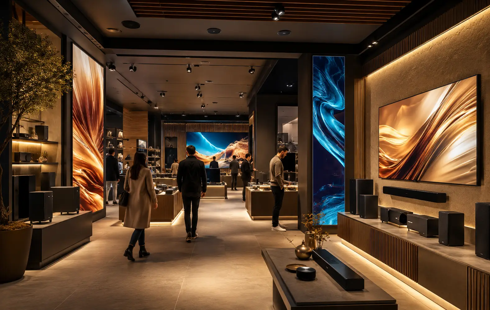
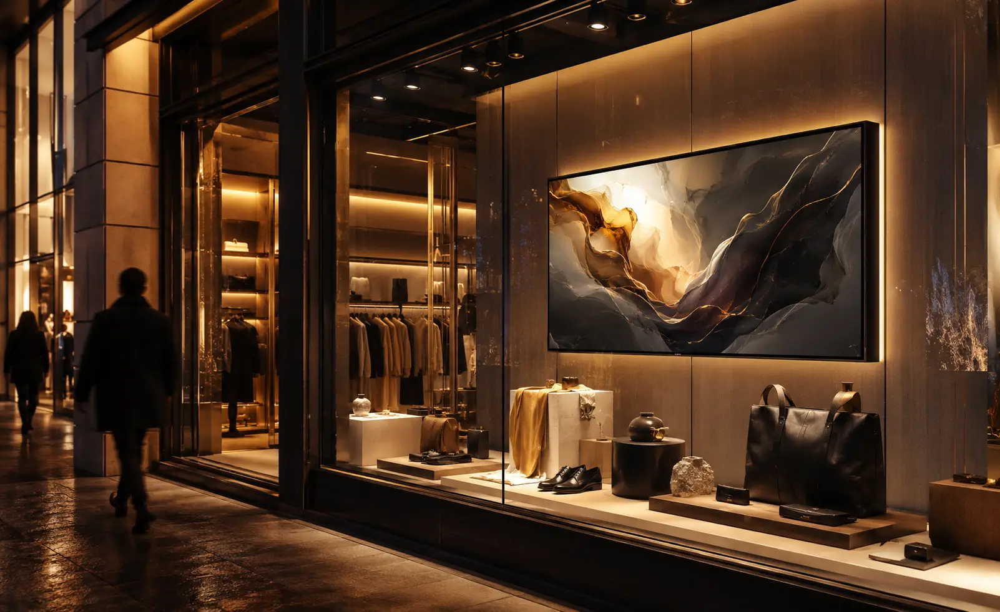
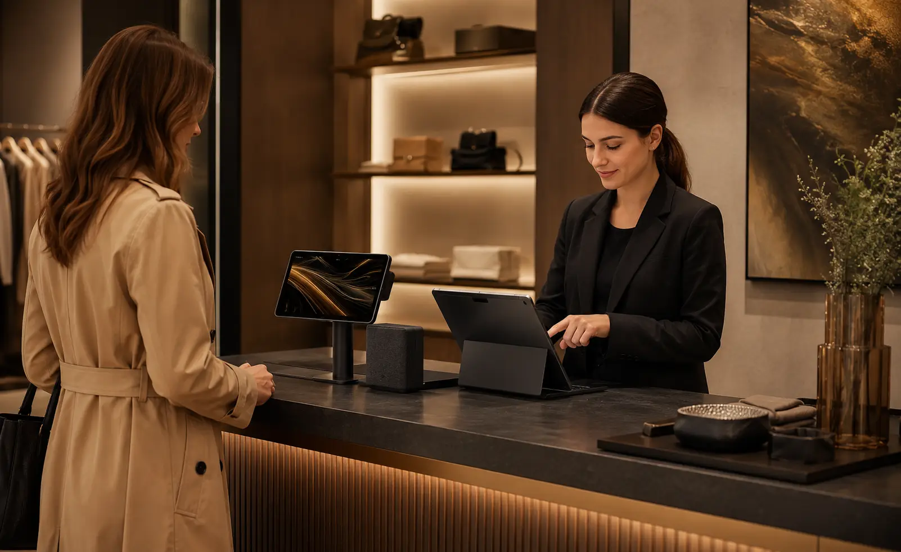
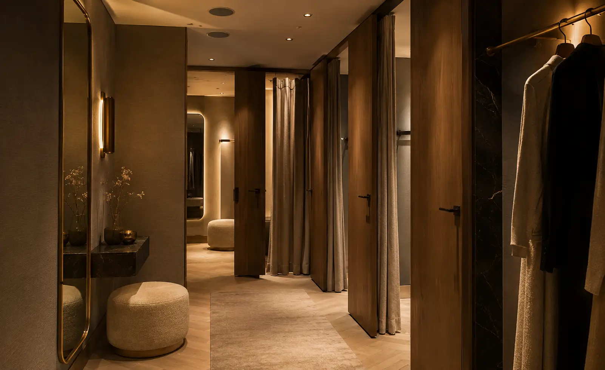
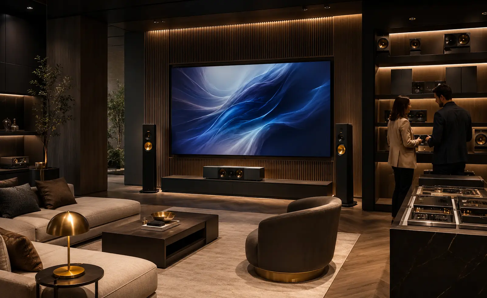
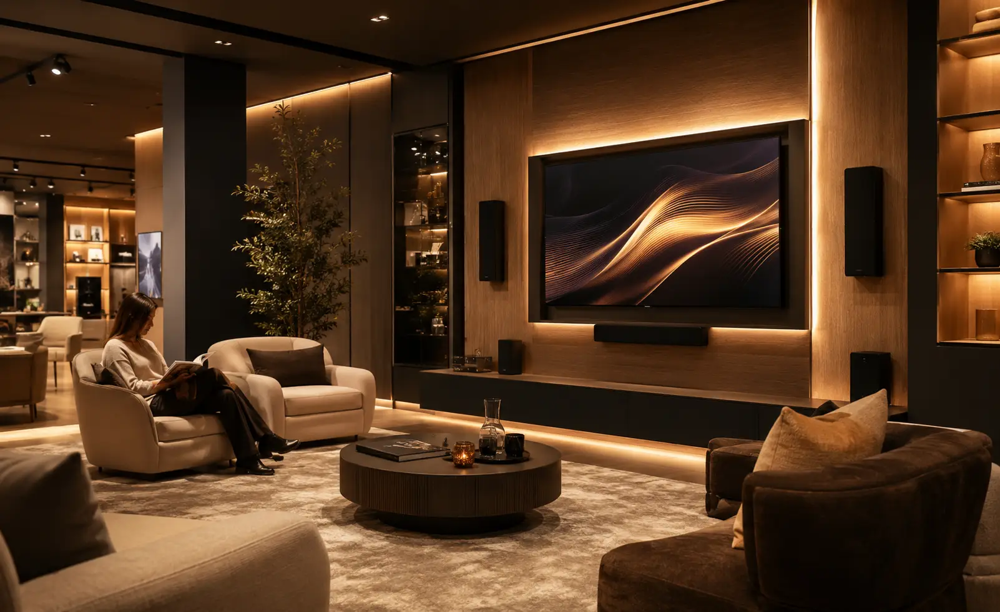

Audio y video para retail: música ambiental, pantallas y señalización digital.
Diseñamos sistemas de música ambiental, audio por zonas, pantallas, señalización digital,
distribución de video y control para tiendas, boutiques, showrooms y puntos de venta.
Consideramos dimensiones, altura, recorrido del cliente, ruido ambiental, cobertura,
visibilidad, número de pantallas, fuentes de contenido, operación del personal y equipos
existentes para dimensionar correctamente el sistema.
Una tienda también comunica a través del ambiente
En retail, la música, el nivel de sonido, las pantallas, el contenido visual y la forma en que se distribuyen las zonas forman parte de la experiencia física del punto de venta.
En DG Audiosound diseñamos la distribución de audio y video para mantener cobertura, visibilidad, control y una operación consistente con el concepto y el recorrido del cliente.
Cobertura uniforme
Audio distribuido para mantener niveles consistentes entre piso de venta, caja, probadores y otras áreas.
Nivel apropiado
El sistema se ajusta según ruido ambiental, tipo de tienda y experiencia prevista para cada zona.
Contenido visible
Pantallas y señalización digital ubicadas según recorridos, distancias y ángulos de visión.
Control por zonas
Piso de venta, aparador, caja, probadores o showroom pueden operar con niveles o fuentes independientes.
Un espacio retail no debe sentirse improvisado
En muchos espacios se intenta cubrir todo con una bocina demasiado fuerte en una sola zona. Esto provoca áreas con volumen excesivo, otras sin claridad, música molesta para conversar, cables visibles o equipos difíciles de operar.
El reto no es solamente comprar bocinas, amplificadores o pantallas por separado. Un sistema para retail requiere definir cobertura, cantidad y ubicación de altavoces, zonas, cableado, pantallas, fuentes de contenido y control según el espacio.
Audio mal distribuido
Una mala ubicación o cantidad de altavoces puede generar zonas con exceso de nivel y otras con cobertura insuficiente.
Pantallas sin estrategia
La ubicación, altura y orientación de las pantallas deben responder al recorrido del cliente y a los ángulos de visión.
Marca poco clara
Audio y contenido visual sin una lógica común pueden generar una experiencia inconsistente entre distintas áreas o sucursales.
Operación complicada
El personal necesita controles claros para gestionar niveles, fuentes y contenido sin ajustes innecesarios.
Una solución audiovisual completa para que tu tienda se escuche, se vea y comunique mejor.
La solución se adapta al concepto de marca, recorrido del cliente, zonas, tipo de producto, campañas comerciales, operación diaria, señalización digital y presupuesto.
Audio ambiental distribuido
Música con cobertura uniforme en piso de venta, caja, probadores, showroom y otras áreas del punto de venta.
Audio por zonas y fuentes
Niveles o fuentes independientes cuando distintas áreas requieren condiciones de operación diferentes.
Altavoces de plafón o muro
Seleccionamos formato, cobertura y ubicación según altura, arquitectura, ruido ambiental y distribución del local.
Pantallas y señalización digital
Displays para promociones, branding, lanzamientos o información, con ubicación, soportes, conectividad y distribución de señal según el proyecto.
Amplificación, matrices y distribución
Amplificación dimensionada para la carga, ruteo de fuentes y distribución de señal de audio o video según el número de zonas y destinos.
Control, cableado y puesta a punto
Control por zonas, cableado, organización de equipos, pruebas, configuración y capacitación según el alcance contratado.
Audio y video adaptados a cada área del punto de venta
Piso de venta, aparador, caja, probadores, showroom y lounge pueden requerir niveles, contenido, visibilidad y control diferentes. Diseñamos cada área como parte de un sistema coordinado.

Piso de venta
Aparador
Área de caja
Probadores
Showroom
Sala de espera o loungeUn proceso claro para una solución profesional
Un proceso estructurado para definir alcance, zonas, cobertura, pantallas, fuentes, cableado, instalación, configuración y operación antes de poner el sistema en servicio.
Entendemos tu tienda
Conocemos tu marca, cliente, concepto, operación y necesidades.
Revisamos tus áreas
Analizamos piso de venta, aparador, caja, probadores y showroom.
Diseñamos la solución
Definimos audio, video, zonas, equipos, conectividad y montaje.
Propuesta clara
Te entregamos alcance, equipos, tiempos e inversión.
Instalamos
Montaje, conexión, pruebas, ajustes y puesta en marcha.
Te capacitamos
Explicamos el uso básico para una operación sencilla.
No se trata de colocar bocinas y pantallas: se trata de diseñar un sistema para el punto de venta
En retail deben revisarse dimensiones, altura, cobertura, ruido ambiental, número de zonas, potencia, cableado, pantallas, resolución, fuentes, distribución de señal y forma de operación del personal.
Nuestro enfoque es integrar audio, video, señalización y control de forma ordenada con la arquitectura y el recorrido del cliente, buscando operación sencilla, consistencia entre áreas y capacidad de mantenimiento o crecimiento.
Una decisión profesional para tu negocio
- Asesoría personalizada y real
- Propuesta técnica formal y clara
- Equipos profesionales 100% originales
- Instalación estética y estructurada
- Integración armoniosa con el espacio
- Capacitación práctica de uso
- Acompañamiento técnico post-venta
Marcas profesionales para soluciones de alto rendimiento
Seleccionamos tecnología profesional según cobertura, potencia, resolución, conectividad, compatibilidad, operación y presupuesto de cada proyecto.
Preguntas frecuentes sobre audio y video para retail
Resolvemos tus dudas principales para ayudarte a planear e invertir con total tranquilidad y claridad técnica.
Diseñemos el audio y video de tu espacio retail
Completa el formulario y te contactamos por WhatsApp para revisar dimensiones, zonas, pantallas, señalización digital, audio y equipos existentes.
Hablemos de tu
tienda o espacio retail
Platícanos cómo es tu tienda y qué necesitas resolver. Podemos orientarte sobre música ambiental, zonas, pantallas, señalización digital, distribución de video, control o actualización de un sistema existente.
Solicita asesoría para tu espacio retail
Completa el formulario y se abrirá WhatsApp con la información estructurada. Indica si buscas un sistema nuevo o una actualización y comparte medidas, zonas, pantallas y equipos existentes cuando los conozcas.